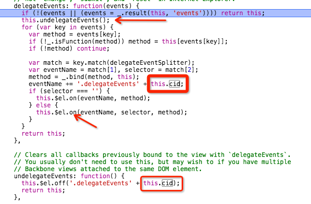

Yesterday when I debugged some old JS code, I found an interesting thing that some event’s callback function ran two times.
1 JQuery Event
on
1234567
jQuery.fn.extend({
on: function( types, selector, data, fn, /*INTERNAL*/ one ) {
...... //ignore some code
jQuery.event.add( this, types, fn, data, selector )
}
})
add
1234567891011121314151617
add: function( elem, types, handler, data, selector ) {
elemData = data_priv.get( elem );//get the cache of the element
eventHandle = elemData.handle = function( e ) {
jQuery.event.dispatch.apply( elem, arguments )
}
elem.addEventListener( type, eventHandle, false );//when event trigger, always run eventHandle/dispatch, do not run handler directly
elemData.events[ type ] = jQuery.extend({
type: type,
origType: origType,
data: data,
handler: handler,
guid: handler.guid,
selector: selector,
needsContext: selector && jQuery.expr.match.needsContext.test( selector ),
namespace: namespaces.join(".")
}, handleObjIn ); //the true callback stored in the cache, and it must be runned by the dispatch function
}
dispatch
12345678
dispatch: function( event ) {
// Make a writable jQuery.Event from the native event object
event = jQuery.event.fix( event );
handlers = ( data_priv.get( this, "events" ) || {} )[ event.type ] ;//find the right type event from the cache
// Determine handlers
handlerQueue = jQuery.event.handlers.call( this, event, handlers );
handleObj.handler.apply( matched.elem, args );
2 Backbone Event delegate

we can see that backbone change the origin event name that we write in events like
123
events:{
'click #saveButton1': 'saveForm',
}
3 The truth
someone change the view’s cid privately after initialize:
1
this.cid = model.cid;
So when the view delegate Events, the undelegateEvents doesn’t work as perposes.
The events who have the old event name could not be found and be off.
after delegate, some events have a copy of themselves.